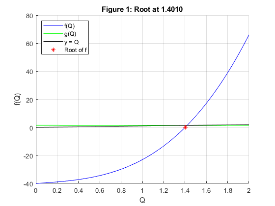
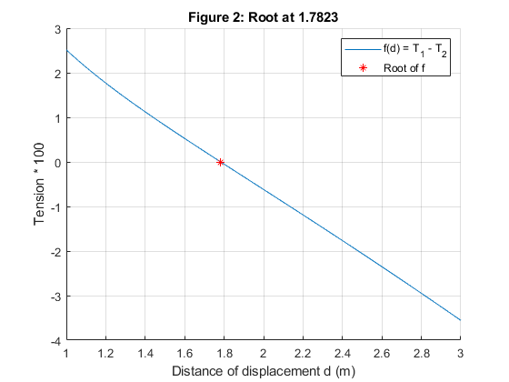
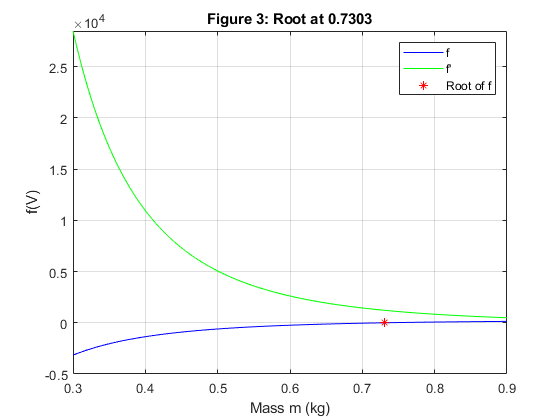
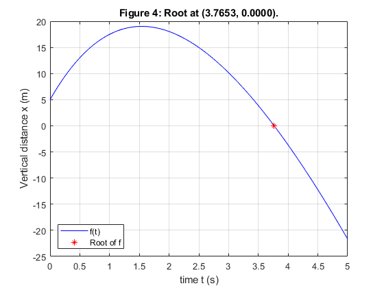
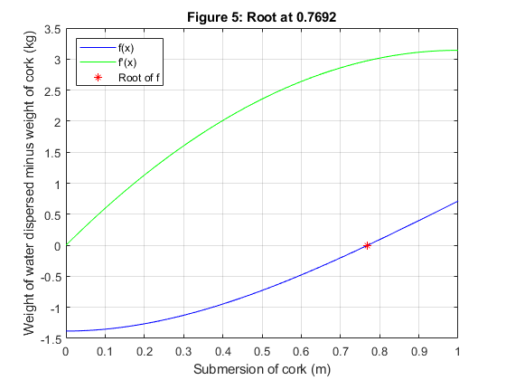

Contents
Copyright
close all; format compact; clc; fprintf("Engineer: Rodrigo Becerril Ferreyra\n"); fprintf("Company: California State University, Long Beach\n"); fprintf("Project Name: Exam 1\n"); fprintf("Date: 01 October 2020\n");
Engineer: Rodrigo Becerril Ferreyra Company: California State University, Long Beach Project Name: Exam 1 Date: 01 October 2020
Problem 1
Fixed point method
clear variables; fprintf("\nProblem 1\n"); % Root finding f = @(Q) 12.*Q.^3 + 5.*Q - 40; g = @(Q) ((40 - 5.*Q)./12).^(1/3); iters = 25; x = 0; last_x = x; x = g(x); fprintf("(%-6s, %-6s) %s\n", "x", "g(x)", "Iteration"); fprintf("(%6.4f, %6.4f) %d\n", last_x, x, 25 - iters); while (abs(last_x - x) >= 1e-4) && (iters > 0) % If one fails, it exits last_x = x; x = g(x); iters = iters - 1; fprintf("(%6.4f, %6.4f) %d\n", last_x, x, 25 - iters); end % Plotting figure(); hold on; Q = linspace(0, 2, 101); f_Q = f(Q); g_Q = g(Q); y = Q; plot(Q, f_Q, 'b-', Q, g_Q, 'g-', Q, y, 'k-', x, f(x), 'r*'); grid on; legend("f(Q)", "g(Q)", "y = Q", "Root of f", "Location", "northwest"); title(sprintf("Figure 1: Root at %6.4f", x)); xlabel("Q"); ylabel("f(Q)"); hold off;
Problem 1 (x , g(x) ) Iteration (0.0000, 1.4938) 0 (1.4938, 1.3944) 1 (1.3944, 1.4014) 2 (1.4014, 1.4009) 3 (1.4009, 1.4010) 4
Problem 2
Bisection method
clear variables; fprintf("\nProblem 2\n"); % Root finding f = @(d) ((100.*sqrt(9 + d.^2))./d) - (400.*(sqrt(9 + d.^2) - 3)); a = 1; b = 3; c = (a + b)/2; last_c = c + 1; % this is so that the loop runs at least once iters = 25; fprintf("%-6c %-6c %-6c Iterations\n", 'a', 'b', 'c'); while (abs(last_c - c) >= 1e-4) && (iters > 0) last_c = c; switch(sign(f(c)*f(a))) case 1 a = c; case -1 b = c; end c = (a + b)/2; fprintf("%6.4f %6.4f %6.4f %d\n", a, b, c, 25-iters); iters = iters - 1; end % Plotting figure(); hold on; d = linspace(1, 3, 101); f_d = f(d); plot(d, f_d./100); plot(c, f(c)/100, 'r*'); grid on; xlabel("Distance of displacement d (m)"); ylabel("Tension * 100"); title(sprintf("Figure 2: Root at %6.4f", c)); legend("f(d) = T_1 - T_2", "Root of f"); hold off;
Problem 2 a b c Iterations 1.0000 2.0000 1.5000 0 1.5000 2.0000 1.7500 1 1.7500 2.0000 1.8750 2 1.7500 1.8750 1.8125 3 1.7500 1.8125 1.7813 4 1.7813 1.8125 1.7969 5 1.7813 1.7969 1.7891 6 1.7813 1.7891 1.7852 7 1.7813 1.7852 1.7832 8 1.7813 1.7832 1.7822 9 1.7822 1.7832 1.7827 10 1.7822 1.7827 1.7825 11 1.7822 1.7825 1.7823 12 1.7822 1.7823 1.7823 13
Problem 3
Newton--Raphson method
clear variables; fprintf("\nProblem 3\n"); % Root finding P = 1; R = 0.0820; m = 22.415; a = 1.36; b = 0.0318; n = 1; T = 273; f = @(V) (P + (m.^2 * a)./(V.^2)).*(V - m*b) - n*R*T; fp = @(V) (P.*V.^3 - a*m^2.*V + 2*a*b*m^3)./(V.^3); x = 0.4; last_x = x; x = x - f(x)/fp(x); iters = 25; fprintf("(%-6s, %-6s) %s\n", "x(n-1)", "x(n)", "Iteration"); fprintf("(%6.4f, %6.4f) %d\n", last_x, x, 25 - iters); while (abs(last_x - x) >= 1e-4) && (iters > 0) last_x = x; x = x - f(x)/fp(x); iters = iters - 1; fprintf("(%6.4f, %6.4f) %d\n", last_x, x, 25 - iters); end % Graphing domain = linspace(0.3, 0.9, 101); figure(); plot(domain, f(domain), 'b-', domain, fp(domain), 'g-', x, f(x), 'r*'); grid on; legend("f", "f'", "Root of f", "Location", "northeast"); xlabel("Mass m (kg)"); title(sprintf("Figure 3: Root at %6.4f", x)); ylabel("f(V)"); axis([0.3, 0.9, -0.5e4, fp(0.3)]);
Problem 3 (x(n-1), x(n) ) Iteration (0.4000, 0.5241) 0 (0.5241, 0.6390) 1 (0.6390, 0.7098) 2 (0.7098, 0.7291) 3 (0.7291, 0.7303) 4 (0.7303, 0.7303) 5
Problem 4
Secant method
clear variables; fprintf("\nProblem 4\n"); % Root finding p = 0.35; x0 = 5; v0 = 20; vr = 9.8/p; f = @(t) (1/p) * (v0 + vr) .* (1 - exp(-p.*t)) - vr.*t + x0; x0 = 2; x1 = 2.5; x = x1 - f(x1)*((x1 - x0)/(f(x1) - f(x0))); fprintf("%-6s %-6s %-6s %s\n", "x_root", "x1", "x0", "Iteration"); fprintf("%6.4f %6.4f %6.4f\n", x, x1, x0); iters = 25; while (abs(x - x1) >= 1e-4) && (iters > 0) x0 = x1; x1 = x; x = x1 - f(x1)*((x1 - x0)/(f(x1) - f(x0))); iters = iters - 1; fprintf("%6.4f %6.4f %6.4f %d\n", x, x1, x0, 25 - iters); end % Graphing domain = linspace(0, 5, 101); figure(); plot(domain, f(domain), 'b-', x, f(x), 'r*'); grid on; legend("f(t)", "Root of f", "Location", "southwest"); xlabel("time t (s)"); ylabel("Vertical distance x (m)"); title(sprintf("Figure 4: Root at (%6.4f, %6.4f).", x, f(x)));
Problem 4 x_root x1 x0 Iteration 4.9414 2.5000 2.0000 3.5293 4.9414 2.5000 1 3.7322 3.5293 4.9414 2 3.7666 3.7322 3.5293 3 3.7653 3.7666 3.7322 4 3.7653 3.7653 3.7666 5
Problem 5
Newton--Raphson method
clear variables; fprintf("\nProblem 5\n"); % Root finding R = 1; p = 0.33; f = @(x) (pi.*x.*(3.*(R^2 - (R - x).^2) + x.^2)./6) - (4/3 * pi * R^3 * p); fp = @(x) -pi.*x.*(x - 2*R); x = 0.75; last_x = x; x = x - (f(x)/fp(x)); iters = 25; fprintf("(%-6s, %-6s) %s\n", "x(n-1)", "x(n)", "Iteration"); fprintf("(%6.4f, %6.4f) %d\n", last_x, x, 25 - iters); while (abs(x - last_x) >= 1e-4) && (iters > 0) last_x = x; x = x - (f(x)/fp(x)); iters = iters - 1; fprintf("(%6.4f, %6.4f) %d\n", last_x, x, 25 - iters); end % Graphing domain = linspace(0, 1, 101); figure(); plot(domain, f(domain), 'b-', domain, fp(domain), 'g-', x, f(x), 'r*'); grid on; xlabel("Submersion of cork (m)"); ylabel("Weight of water dispersed minus weight of cork (kg)"); title(sprintf("Figure 5: Root at %6.4f", x)); legend("f(x)", "f'(x)", "Root of f", "Location", "northwest");
Problem 5 (x(n-1), x(n) ) Iteration (0.7500, 0.7693) 0 (0.7693, 0.7692) 1